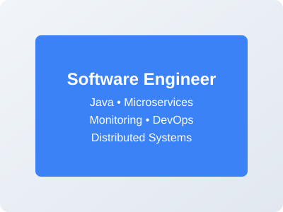
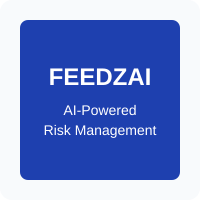

Software Engineer
"Professionals use their skills for good and write code others can understand."
Senior Software Engineer with over six years of experience architecting high-scale monitoring platforms and real-time distributed systems that meet global demands. I have moved from implementing Java-based backends to architecting monitoring platforms and navigating high-stakes technical strategy across Europe and the Asia-Pacific.
Much of this work has been rooted in the fintech sector, where I have collaborated with multidisciplinary teams from diverse technical and cultural backgrounds. I am particularly drawn to complex challenges that test my technical limits, drive me to new perspectives, and equip me with the advanced skills necessary to excel.
My technical foundation includes object-oriented design and distributed systems with hands-on experience in Cassandra, Spark, RabbitMQ, Zookeeper, Docker, Prometheus, Grafana, Graylog, Jaeger, and AWS services such as EC2, S3, and CloudWatch.
Years of Experience
Core Technologies
Regions Worked In


Jul 2024 - Present
Architecting high-availability fraud detection solutions with a machine-learning-first approach for global banking and e-commerce leaders.
Jan 2023 - Jun 2024
Relocated to Hong Kong to lead on-site technical consultations across Singapore and Australia.
Sep 2021 - Jan 2023
Built fraud detection systems and mission-critical distributed architectures in a remote engineering setup.
Aug 2020 - Sep 2021
Led monitoring-system design and implementation during the transition from monolithic to microservices architecture.
Jun 2018 - Aug 2018
Managed real-time results for the European Universities Games while leading a multidisciplinary volunteer team.
Sep 2018 - Jun 2020
Specialisation in Software Engineering.
Final dissertation: "An information system for assessing and guiding industry 4.0 strategies," focused on digital transformation methodologies by developing a full-stack web application using React.js, Node.js, and MySQL.
The research achieved a grade of 19/20, included a pilot at CELBI, and was later presented at AMCIS 2023.
Sep 2015 - Jun 2019
Curriculum aligned with IEEE/ACM/AIS standards, focusing on Computational Intelligence, Distributed Systems, and Software Engineering, complemented by fundamentals in Management and Economics.
Sep 2012 - Jun 2015
A portfolio of 8+ mobile applications published on Google Play, showcasing practical app development skills. It includes utility, educational, lifestyle, and entertainment apps built with Flutter and Dart. Featured apps include Sleep Precheck, Handshake Trainer, Color Picker, Compliment Generator, Property Wishlist, Book Quote Saver, Fact About Today, and Coffee App (400+ downloads).
Master's dissertation research project: a comprehensive web application for assessing and guiding Industry 4.0 strategies in companies, including diagnostic tools, strategy execution tracking, and data visualization for continuous improvement.
Research paper presented at AMCIS 2023 (Strategic & Competitive Uses of Information and Digital Technologies). It introduces a novel approach to Industry 4.0 adoption by extending the Balanced Scorecard with a fifth perspective and maturity model fragments.
I'm always open to discussing challenging engineering problems, collaboration opportunities, and new projects. If you have an idea in mind or would like to connect, I'd be glad to hear from you.